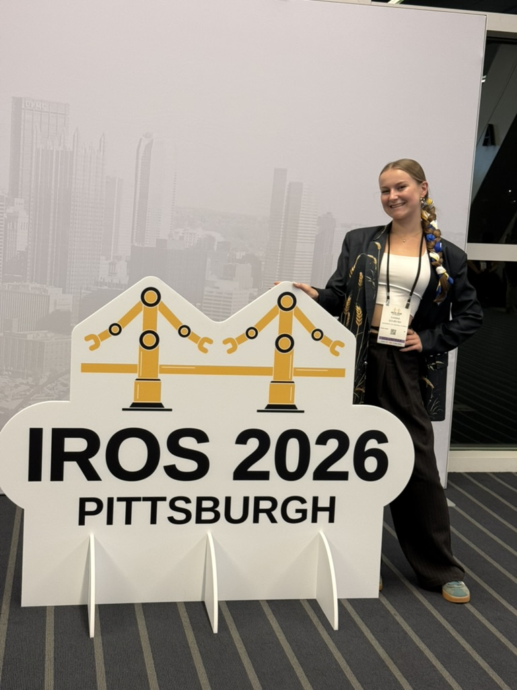
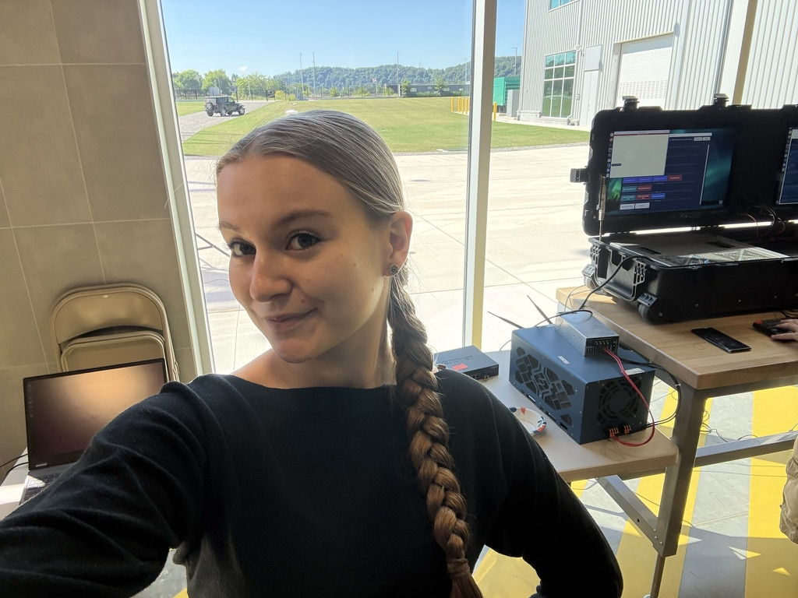
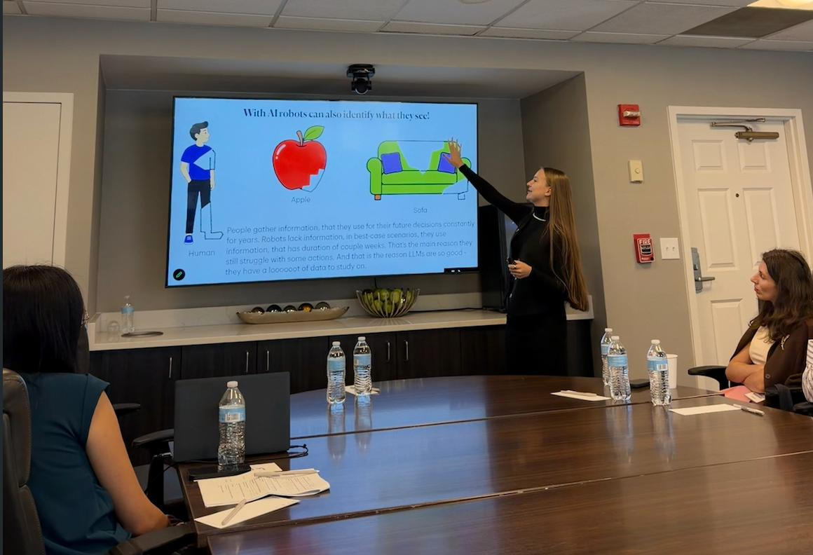
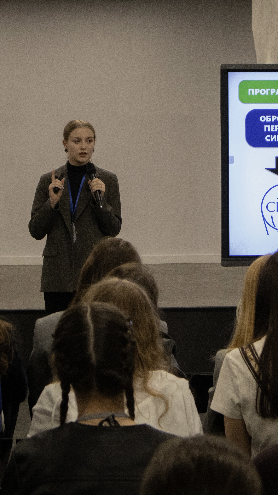
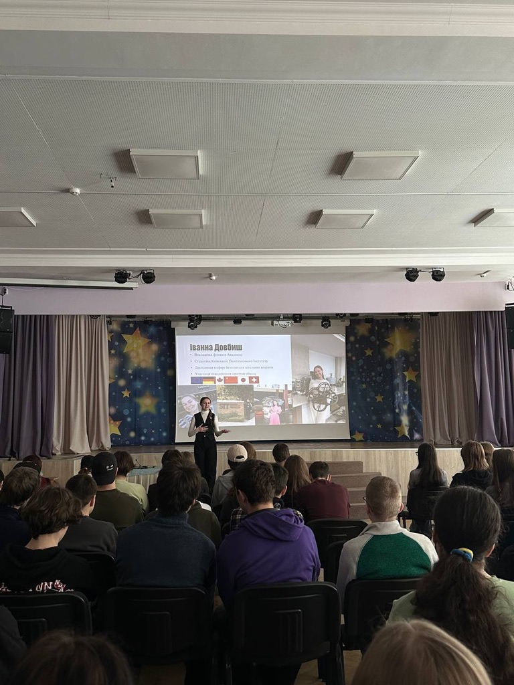
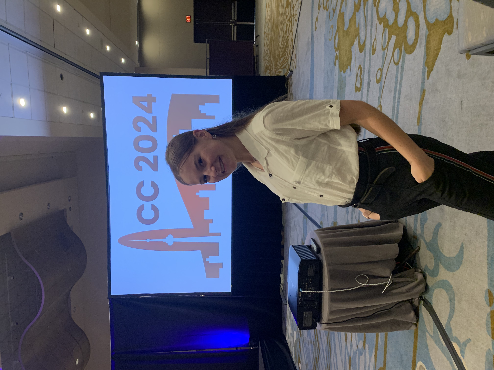
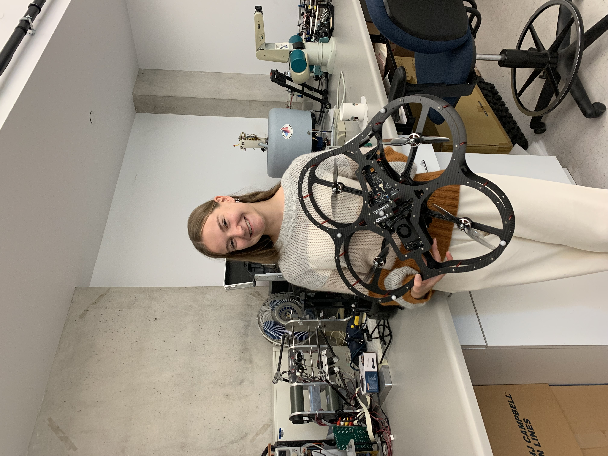

IROS Video Award
For the video “Standards for the Usefulness of AI in Robotics,” with a travel grant to ICRA 2027.
I am a Fulbright scholar and M.S. student in Electrical Engineering at the University of Central Florida, where I work in the Learning, Communications, and Wireless Networks Lab with Dr. Nazanin Rahnavard. Using Meta Project Aria glasses, I am developing a system that detects moving obstacles and predicts their trajectories and possible collisions, with applications in safe driving and in helping people with impaired vision navigate crowded environments.
I received my B.S. with Honors from the National Technical University of Ukraine “Igor Sikorsky Kyiv Polytechnic Institute”, specializing in Automation and Non-Destructive Testing Systems, where I was advised by Dr. Oleksandr Muraviov. Most recently, I worked with Dr. Sebastian Scherer at the AirLab at Carnegie Mellon University on the DARPA Triage Challenge, developing people-detection systems for disaster response. Before that, I built interactive outreach tools with Dr. Benjamin Couturier at the LHCb experiment at CERN, and worked on vision-based navigation of quadrotor drones with Dr. Abdelhamid Tayebi at Lakehead University as a Mitacs Globalink Research Intern.
Feel free to reach out about potential collaborations or talks, or if you have questions about studying abroad, finding opportunities, or choosing a field of study.
For the video “Standards for the Usefulness of AI in Robotics,” with a travel grant to ICRA 2027.
Full internship funding from the U.S. Department of State; one of 27 fellows selected in 2026.
Full funding for M.S. studies at UCF; one of 15 Ukrainian grantees in 2025.
Ukraine–Japan academic and cultural exchange; one of 2 Ukrainian participants.
Educational visit on technological innovation; one of 3 Ukrainian participants.
One of Ukraine’s most prestigious national scholarships, awarded to 250 students each year.
Full funding for research at a Canadian university.
For research on UAV autonomy.
International technology and cultural exchange program.







